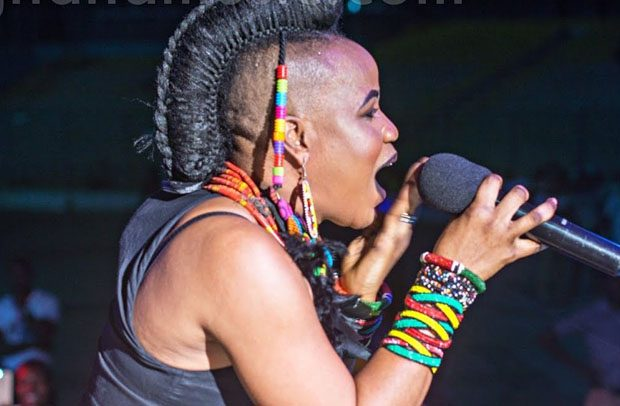

This region, one of Ghana's sixteen administrative divisions, stands out not only for its geographical beauty but also for its cultural tapestry and historical roots. Situated west of the Republic of Togo and to the east of Lake Volta, the Volta Region boasts Ho as its capital. With 25 administrative districts, this multi-ethnic and multilingual region is a melting pot of cultures, including the Ewe, Guan, and Akan peoples. Notable among the Guan peoples are the Lolobi, Likpe, Akpafu, Buem, and Nkonya (now part of Oti region) communities. he Ewe people, comprising subgroups like Anlo Ewe, Tongu Ewe, Wedome Ewe, Ave Ewe, and Avenor Ewe, constitute the largest ethnic group in the Volta Region, accounting for 68.5% of the population. Other ethnicities include the Guan people (9.2%), the Akan people (8.5%), and the Gurma people (6.5%).

The Volta Region is renowned for its bright festivals and loud ceremonies. The people of Wli hold a unique festival to give thanks for the gift of water,
whiles the Anlos people put on the illustrious Hogbetsotso festival ( the name is derived from the Ewe language and translates as ‘festival of Exodus’).
A purification ceremony takes place on the first Saturday in November and is followed by several days of cleaning the villages, sweeping the streets,
and burning of rubbish. At the climax of the festival, local people do the traditional Borborbor dance, while chiefs dress in colourful regalia and receive
homage from their subjects. The joyous dancing and singing that characterize the Volta festivals is a reminder of the region’s rich diversity of history and tribal culture.
September each year, the chiefs and people of Asogli State, Ho and its environs celebrate their annual yam festival. This is essentially a harvest festival celebrated to give thanks to God,
the lesser gods and ancestors for a bumper harvest. It is an occasion to offer prayers for good health throughout the year, prosperity for all and to foster unity through forgiveness and reconciliation.
As part of the celebration, cooked mashed yam is sprinkled at the various shrines across the state. After the gods are fed, everyone is then permitted to taste the fresh yams.
There is usually a grand durbar of chiefs where the Paramount chief (Togbe Afede XIV) sits in state to receive homage from his sub-chiefs. The festival serves as an annual re-affirmation of allegiance by
all chiefs and their subjects in the Asogli State to the Agbogbome stool.
November is when the chiefs of Gbi (North) of Hohoe areas and Gbi (South) Peki areas celebrate their festival. This festival rotates from Hohoe to Peki. It is a very colourful festival full of pomp and pageantry.
Chiefs are carried in palanquins amidst drumming and dancing. The festival is to commemorate the exploits of the Gbi-Ewes of old. New development projects are initiated.
It also marks the period of family re-union and to attract thousands of people from far and near.


The Volta Region, located in the southeastern part of Ghana, is a lush, fertile area known for its rich farmlands and proximity to the Volta River. The region’s cuisine is heavily influenced by the Ewe people,
whose dishes are crafted with fresh ingredients and bold flavors. Root crops like cassava, maize, and yams dominate the food scene, often paired with freshly caught fish.
Banku, a mixture of fermented maize and cassava dough, is a staple dish in the Volta Region. Its tangy, slightly sour flavor pairs perfectly with grilled tilapia, often marinated with a blend of spices, garlic, ginger, and lime juice.
The dish is served with a spicy pepper sauce made from fresh tomatoes, peppers, and onions. The smokiness of the grilled fish combined with the soft, sour banku creates an irresistible harmony of flavors.
Akple is another staple dish in the Volta Region, similar to banku but firmer in texture. It is made from maize flour and served with okro soup, a thick and flavorful dish cooked with okra, palm oil, and a choice of meat or fish.
The soup has a slimy consistency, which makes it easy to scoop with the akple.